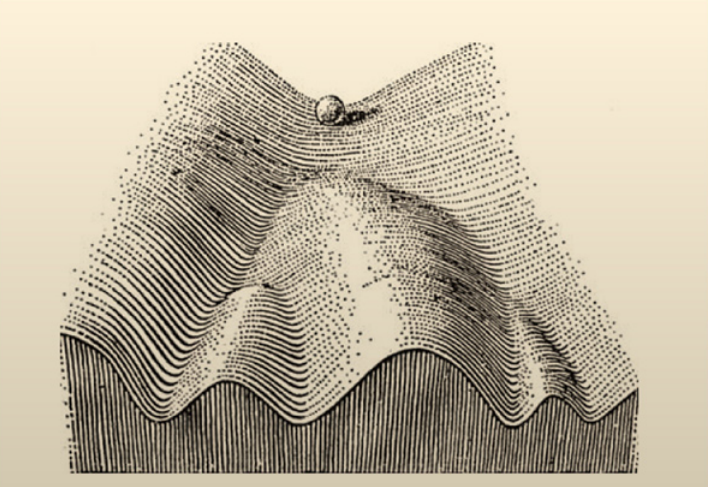
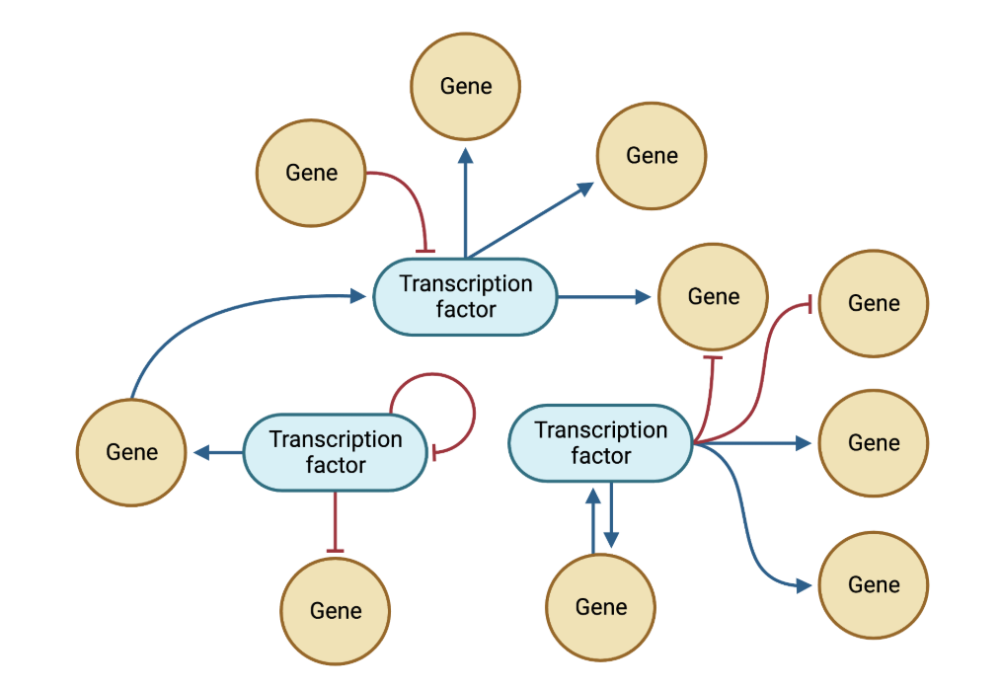
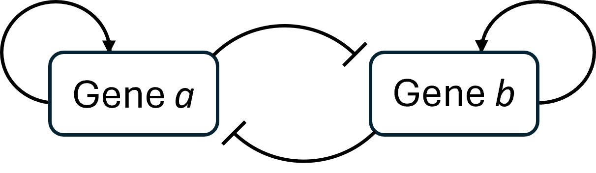
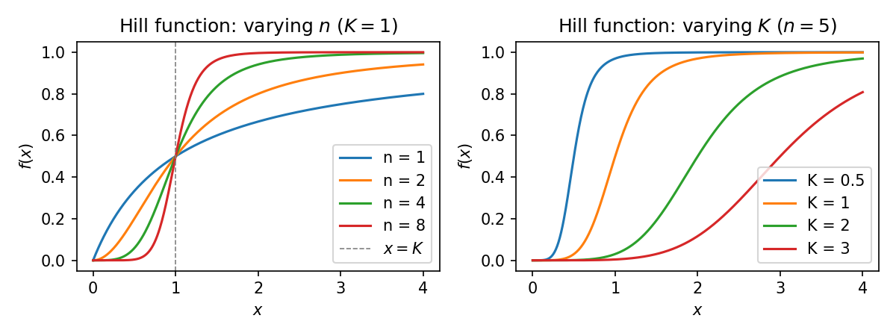
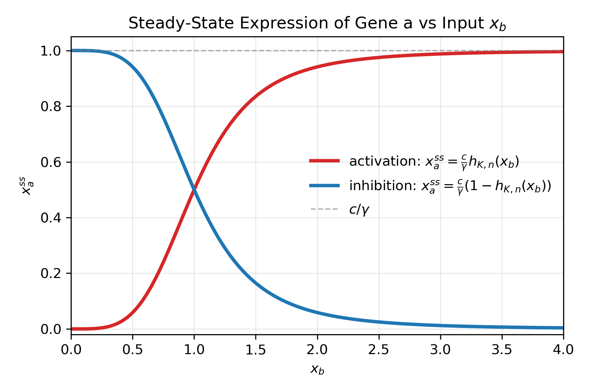
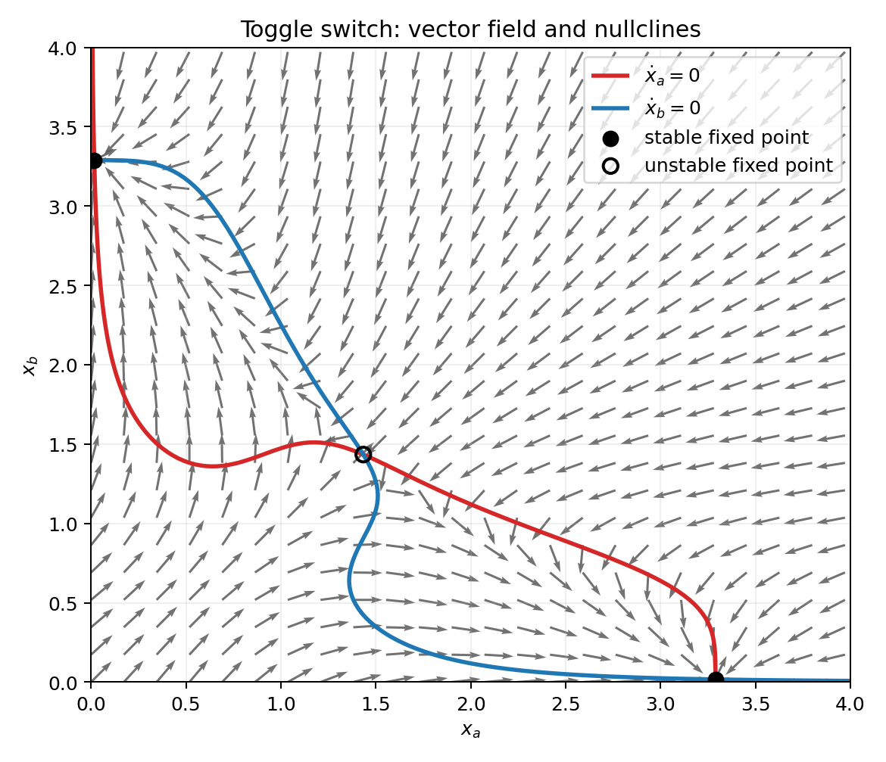
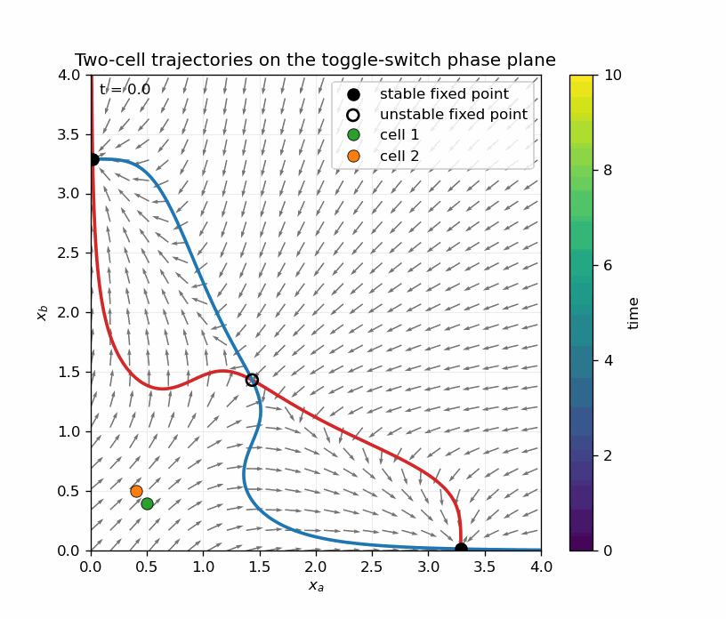
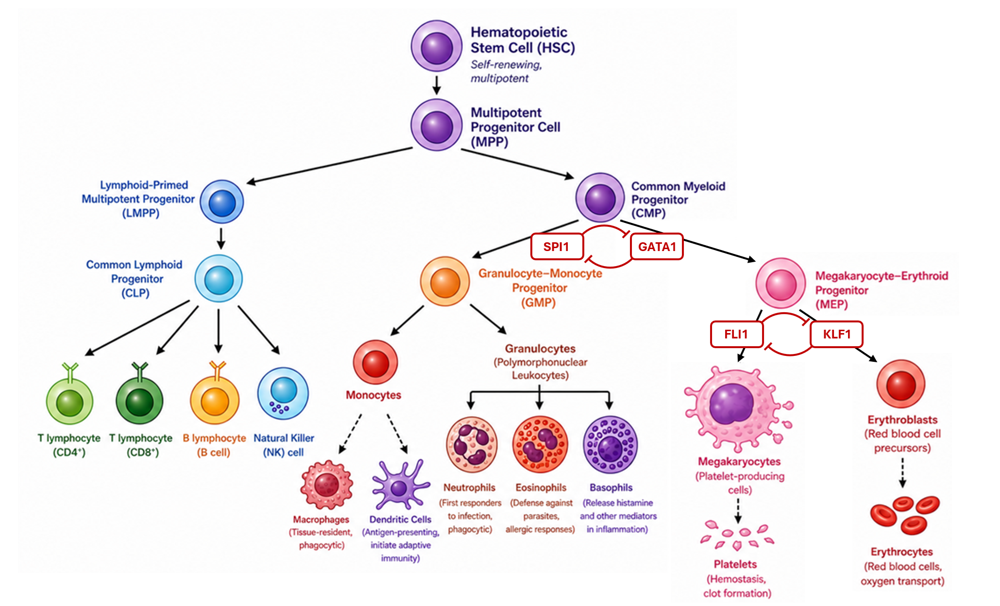
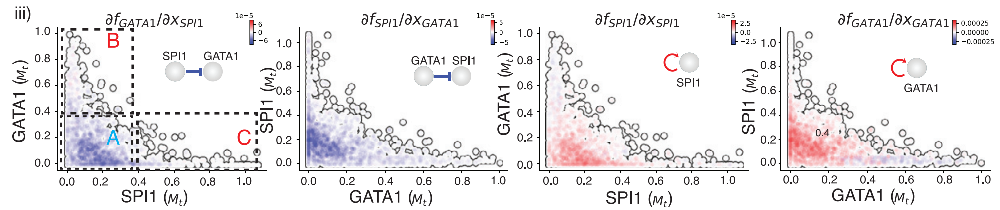

Cell fate has become a hot topic in stem cell research in recent years. Although the term has a philosophical tone, it really describes the outcome of a very specific biological process: how a stem cell develops into a terminal cell type–namely, cell differentiation. Every student of cell differentiation eventually encounters a familiar image from Waddington’s 1957 seminal work, the epigenetic landscape:

In this picture, differentiating cells are like marbles sliding down the valleys of a mountainous terrain. At each fork, a cell commits to one of several possible branches. Eventually, as the marble settles into a basin, the process of differentiation—from a stem cell to a terminal cell type—is complete, and the cell’s fate is determined.
As we go deeper into the rabbit hole of the biology of cell differentiation, we learn that this process is controlled by intricately woven webs of gene interactions—so-called gene regulatory networks (GRNs). In the following diagram of such networks, regular arrows represent activation, or upregulation, while arrows ending in a flat “T” indicate inhibition, or downregulation.

The key players in these networks are transcription factors. The Waddington landscape is often referred to as an epigenetic landscape because, although all cells share the same genome, it is the activity of transcription factors that determines which genes are expressed—and therefore what a cell is.
But! you may wonder: how are these two pictures of cell differentiation related to each other? Or more specifically, how do GRNs shape a landscape like this? As we will see, the hills and valleys are not drawn by hand — they emerge from the topology of gene interactions, and, at heart, it is a story about symmetry breaking.
Here, I will take a reductionist approach, looking at how a minimal set of gene interactions can give rise to a simple fork—first with intuition, and then with a little bit of math.
A Simple “Toggle Switch” Link to heading
Imagine a cell of an intermediate type (a progenitor) at a fork in the Waddington landscape. The fork leads to downstream cell types. Cell type A is characterized by high expression of gene a and low expression of gene b, while cell type B is characterized by high expression of gene b and low expression of gene a.
A simple interaction pattern (a motif) that consists of two genes and produces this type of binary outcome is called a “toggle switch”: both genes are continuously expressed and degraded, and the product of gene a inhibits the expression of gene b, and vice versa.

As a result, if the progenitor has slightly more a than b, the excess a will inhibit the expression of b. Since a is continuously replenished and is less inhibited as b diminishes, this imbalance is amplified, tipping the system further and further toward “more a and less b.” This is the simplest genetic circuit motif that gives rise to a fork, composing the hills and valleys of the Waddington landscape for cell differentiation.
You might think this is probably just another pedagogical toy model, and in real life there’s no way that it is this simple and clean. You are not wrong, because indeed this model is a simplification and real biology is always messy. For instance, real GRNs can involve dozens to hundreds of interacting genes instead of just two; transcription factor binding is graded and cooperative rather than a clean binary switch; external signals such as cytokines and growth factors further modulate gene expression; and gene expression itself is inherently stochastic, so individual cells of the same type can differ substantially in their transcript levels at any given moment. However, just like how people underestimate how useful and common the ideal gas model is, the two-gene toggle switch model is actually found in many differentiation processes, in real-life biology. Famous examples include the GATA1-SPI (or PU.1 by its protein name) toggle switch in hematopoiesis (blood stem cell differentiation), and the Pax4-Arx toggle switch in pancreatic islet differentiation. Later in this post, I will elaborate on hematopoiesis and show how we “rediscovered” the GATA1-SPI interaction in our 2022 Cell paper, but first, I will need to introduce some math that’s vital for understanding the analyses we performed and all the nuances behind the intuitions. With that being said, feel free to skip to the bottom if you are not interested in the mathematical modeling part of the story.
Why ODEs Here? Link to heading
To connect GRN wiring diagrams to cell-fate dynamics, we need a language that describes how expression levels change over time. Ordinary differential equations (ODEs) do exactly this: for each gene, we write a rate equation of the form $$ \frac{\mathrm d x}{\mathrm dt} = \text{production} - \text{degradation}. $$ In practice, degradation is often modeled as a first-order term, $\gamma x$, which assumes independent removal of molecules at a constant per-molecule rate. This is a coarse-grained, population-level description, so it does not resolve every molecular event. But it is often detailed enough for biological models and provides numerical simplicity and stability. Let’s call the production term $\alpha$, which will later be replaced by interaction-dependent functions: $$ \frac{\mathrm d x}{\mathrm dt} = \alpha - \gamma x. $$ The steady state is achieved when production and degradation cancel each other out, i.e., $\frac{\mathrm d x}{\mathrm dt}=0$, which gives $$ x^{ss}=\frac{\alpha}{\gamma}. $$ So, for fixed input conditions, the expression level relaxes toward a balance point where production and degradation are equal.
Hill Function: How Mathematicians Model Gene Activation and Inhibition Link to heading
The following function is called a Hill function: $$ h_{K, n}(x) = \frac{x^n}{K^n + x^n} $$ Given an input $x$, it produces a sigmoidal curve in $[0, 1]$. Historically, biochemists have used it to model ligand-receptor binding from mass-action kinetics. In that context, $x$ is the concentration of free ligand, and $h_{K, n}(x)$ gives the fraction of occupied receptors. In mechanistic binding models, the parameter $K$, often called the dissociation constant, has the same units as $x$ and reflects binding affinity. The Hill coefficient $n$ is related to cooperativity ($n>1$ if binding of a few ligand molecules promotes additional ligand binding, and $0<n<1$ for negative cooperativity). In GRN models, we usually gloss over molecular details and treat $K$ and $n$ as effective phenomenological parameters, but the Hill function is still versatile enough to approximate many regulatory responses while retaining biological interpretability.
To see what the two parameters – $K$ and $n$ – do mathematically, let’s look at the following plots:

From the plot on the left, it’s easy to see that $n$ controls how sigmoidal the curve is: the larger $n$ is, the more switch-like the output becomes. The switching midpoint occurs at $x=K$, which follows directly from solving $h_{K, n}(x)=1/2$. The right plot shows that increasing $K$ shifts the curve to the right along the $x$-axis. On an absolute $x$-scale, this can look “softer,” but the intrinsic shape is unchanged after rescaling by $x/K$.
The Hill function is positioned nicely for modeling genetic activation. If gene b activates gene a, then we can write the following ODE: $$ \frac{\mathrm d x_a}{\mathrm dt} = c\ h_{K, n}(x_b) - \gamma x_a $$ where $c$ is a production-rate scaling parameter, so the synthesis term is not restricted to $[0,1]$. Here, $x_a$ can represent protein concentration, mRNA abundance, or another nonnegative expression proxy for gene a. Intuitively, increasing $x_b$ increases $h_{K, n}(x_b)$ and therefore increases the production term for $x_a$. The steady state concentration of gene a is a function of the concentration of gene b: $$ x_a^{ss} = \frac{c}{\gamma} h_{K, n}(x_b) $$ Now it’s even clearer: the steady state concentration of gene a ranges between 0 and $c/\gamma$, and higher concentration of gene b moves it towards $c/\gamma$.
How about inhibition? One naive option is to put a negative sign in front of the Hill function. That is mathematically possible, but biologically problematic: the Hill term represents a synthesis rate and should not be negative. It can also force negative steady states, which are not meaningful for concentrations or counts.
A much cleaner way to model inhibition is to flip the sigmoidal curve using $1-h_{K, n}(x)$. The range of this function is still $[0, 1]$, so synthesis remains nonnegative. The flipped Hill function is: $$ 1 - h_{K, n}(x) = 1 - \frac{x^n}{K^n + x^n} = \frac{K^n}{K^n + x^n} $$ Now, if we write the ODE for “gene b inhibits gene a”: $$ \begin{align*} \frac{\mathrm d x_a}{\mathrm dt} &= c\ \Big(1 - h_{K, n}(x_b)\Big) - \gamma x_a \\\ &= c - c\ h_{K, n}(x_b) - \gamma x_a \end{align*} $$ We can interpret $c$ as a baseline synthesis rate of gene a, and the Hill function models how much the inhibition from gene b reduces it. The steady state solution becomes: $$ x_a^{ss} = \frac{c}{\gamma} \Big(1 - h_{K, n}(x_b)\Big) $$ So, the steady-state concentration of gene a still ranges between 0 and $c/\gamma$, and a higher concentration of gene b moves it toward zero. Here is a plot of the steady-state solutions for both activation and inhibition scenarios:

Modeling the “Toggle Switch” Link to heading
Now we can start to work on the real thing – the “toggle switch” motif, which consists of two self-activating and mutually inhibiting genes: $$ \begin{align*} \frac{\mathrm d x_a}{\mathrm dt} &= c_1\ h_{K_1, n_1}(x_a) + c_2\ \Big(1 - h_{K_2, n_2}(x_b)\Big) - \gamma x_a \\\ \frac{\mathrm d x_b}{\mathrm dt} &= c_3\ h_{K_3, n_3}(x_b) + c_4\ \Big(1 - h_{K_4, n_4}(x_a)\Big) - \gamma x_b \end{align*} $$
It is not practical to analytically solve the above ODEs due to their high nonlinearity. In fact, it is not very informative to solve them numerically for just a few initial conditions either, since that only shows individual trajectories rather than the global picture. A much better approach is to look at the phase plane, given a set of numerical values for the parameters ($c_1 = c_3 = 1.3$, $c_2 = c_4 = 2.0$, $K_1 = K_2 = K_3 = K_4 = 1$, $n_1 = n_2 = n_3 = n_4 = 4$, $\gamma = 1$):

A point on the $x_a$-$x_b$ plane specifies a cell state: $\mathbf{x} = [x_a, x_b]$. More interestingly, the ODEs specify the velocities (visualized as the gray arrows) – where the cell is moving, $\dot{\mathbf{x}} = [\dot x_a, \dot x_b]$. Here, “moving” does not mean cells are physically travelling anywhere; it means the gene expression levels $x_a$ and $x_b$ are changing over time, and $\dot{\mathbf{x}}$ is the rate of that change – an abstract velocity in state space, not physical space. You can imagine placing a cell on this plane, and it will drift according to the arrows.
To find the steady state solutions, we solve the following algebraic equations: $$ \begin{align*} 0 &= c_1\ h_{K_1, n_1}(x_a) + c_2\ \Big(1 - h_{K_2, n_2}(x_b)\Big) - \gamma x_a \\\ 0 &= c_3\ h_{K_3, n_3}(x_b) + c_4\ \Big(1 - h_{K_4, n_4}(x_a)\Big) - \gamma x_b \end{align*} $$ Each equation corresponds to a nullcline on the phase plane: red is the solution of the first equation, when $\dot x_a=0$, and blue is the solution of the second equation, when $\dot x_b=0$. The intersections of the two nullclines are fixed points: states where both $\dot x_a=0$ and $\dot x_b=0$ simultaneously, so the system is truly stationary.
Here’s the catch, though. Not all fixed points are places where the cell state actually settles. The two solid circles are stable fixed points: small perturbations away from them are damped out, so neighboring trajectories are attracted back. These correspond to the two terminal cell types – once a cell reaches one of these states, it stays there. The hollow circle in the center is an unstable fixed point – more precisely, a saddle point – where trajectories are attracted along one direction but repelled along another. This is essentially the fork in the Waddington landscape: the unstable fixed point sits on the boundary between the two basins of attraction and represents the undecided progenitor state. Here is an animation of simulating two cells initiated at each sides of the separatrix (the boundary that divides the two basins):

Now the picture is clear: a progenitor cell starts when its expression state is roughly balanced between the two fates. Any small asymmetry – a stochastic fluctuation, a transient signal, a slight bias in initial expression – tips it toward one basin of attraction or the other. Once pulled past the separatrix, the cell rolls downhill in state space, its expression levels driven by the ODE dynamics, until it settles into one of the two stable fixed points. That is differentiation: not a programmed march toward a predetermined destination, but a symmetry-breaking event shaped by the topology of the phase plane.
Waddington’s Landscape of Hematopoiesis Link to heading
Hematopoiesis is the process by which all blood cells are generated from hematopoietic stem cells (HSCs) in the bone marrow through a hierarchy of progenitor states and lineage commitment. It is a strong real-life example of the Waddington landscape, in which many bifurcations can be interpreted as toggle-switch decisions. Let us focus on two well-studied cases, GATA1/SPI1 and FLI1/KLF1, which control major branch points in the myeloid lineage, and see how we inferred their interplay from single-cell data.

After committing to the myeloid branch (the right branch in the figure), HSCs become common myeloid progenitors (CMPs). A key decision for CMPs is whether to become megakaryocyte-erythrocyte progenitors (MEPs), which generate erythrocytes and megakaryocytes, or granulocyte-monocyte progenitors (GMPs), which later generate granulocytes and monocytes. GATA1 and SPI1 are transcription factors that help steer CMPs toward these different programs. In simplified terms, higher GATA1 activity biases cells toward the MEP side, while higher SPI1 activity biases cells toward the GMP side.
At the regulatory level, this pair behaves like a toggle switch: each factor promotes its own program and suppresses the competing one, directly or indirectly through downstream circuitry. This is exactly where the phase-plane picture comes in handy. If we map $x_a \rightarrow \text{GATA1}$ and $x_b \rightarrow \text{SPI1}$, the two stable fixed points correspond to alternative committed programs, and the unstable saddle corresponds to the decision-like intermediate state. The separatrix then acts as a commitment boundary: once a cell crosses it, returning to the other fate becomes increasingly unlikely. CMPs near the boundary can be tipped one way or the other by noise, signaling inputs, or chromatin context, and then locked in by positive feedback once one side gains an advantage. In the megakaryocyte/erythrocyte lineage, a similar toggle switch is formed by FLI1 (favoring megakaryocytes) and KLF1 (favoring erythrocytes).
Real biological systems involve far more than two genes, but the 2D intuition still holds in high-dimensional gene-expression space. In the 2022 Cell paper, we reconstructed the vector field across a ~2000-gene expression space directly from single-cell RNA-seq data of a hematopoietic differentiation process — without writing down or fitting a mechanistic model. Instead, the vector field is inferred from the data itself (via RNA velocity and a machine-learning framework), making it model-free in the sense that no toggle-switch equation is assumed. The reconstructed vector field is analogous to the phase plane above, but in many more dimensions. For gene $i$, we write its rate equation as a function of all gene expression levels: $$ \frac{\mathrm d x_i}{\mathrm dt} = f_i(x_1, x_2, …, x_{2000}) $$ One way to characterize pairwise interactions is to examine the partial derivative $\partial f_i / \partial x_j$: positive means gene $j$ upregulates gene $i$, negative means it downregulates. When we color each cell by these inferred partial derivatives (red: positive; blue: negative) on the GATA1–SPI1 expression plane, we clearly recover an interaction pattern consistent with a toggle-switch motif:

Figure 5I of X. Qiu, Y. Zhang, et al. 2022, Cell
Cells cluster into three regions: A. the HSC/progenitor region, B. the MEP fixed point (GATA1 high, SPI1 low), and C. the GMP fixed point (GATA1 low, SPI1 high). In the progenitor region, the cross-inhibition partial derivatives $\partial f_{\text{GATA1}} / \partial x_{\text{SPI1}}$ and $\partial f_{\text{SPI1}} / \partial x_{\text{GATA1}}$ are both negative, consistent with mutual repression. The self-activation partial derivatives $\partial f_{\text{GATA1}} / \partial x_{\text{GATA1}}$ and $\partial f_{\text{SPI1}} / \partial x_{\text{SPI1}}$ are both positive, consistent with self-activation.
Of course, the toggle-switch motif is just one of many interaction motifs that shape cell-fate decisions, and even within the toggle-switch framework there is more flexibility than the minimal two-gene model suggests. Self-activation, for instance, is not strictly required: bistability can also arise from external activating signals or indirect positive feedback through downstream targets, as long as the net effect is that each side of the switch reinforces itself while suppressing the other. More importantly, the motif does not have to operate between individual genes. In real GRNs, it is common for two competing gene modules — each comprising dozens of co-regulated targets — to mutually repress one another, with the module as a whole acting as one arm of the switch. In hematopoiesis, for example, the MEP and GMP programs each involve broad transcriptional modules, and it is the competition between these modules, not just between GATA1 and SPI1 individually, that ultimately locks in lineage identity. GATA1 and SPI1 are, in a sense, accessible proxies for a much larger tug-of-war playing out across chromatin accessibility, enhancer activation, and co-factor recruitment genome-wide.
Waddington drew his landscape by hand in 1957, as a metaphor. What the data show is that the valleys and ridges he imagined are not metaphorical at all – they are carved by the geometry of gene regulatory interactions. A two-gene toggle switch defines two attractors and a saddle between them; that saddle is the fork in the landscape, and the separatrix is the ridge the cell must cross to commit. GATA1 and SPI1 are not special exceptions – they are instances of a recurring architectural principle. The fact that we can recover this structure from single-cell RNA-seq data – without assuming any model in advance – suggests that Waddington’s landscape is not just a useful analogy but a measurable, emergent property of how differentiation is wired into the genome. The familiar decision-tree diagram of hematopoiesis is, in this light, just a coarse sketch of something far richer: a high-dimensional landscape whose hills, valleys, and ridges are sculpted by the same toggle-switch logic playing out across dozens of gene pairs simultaneously.